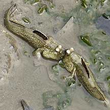
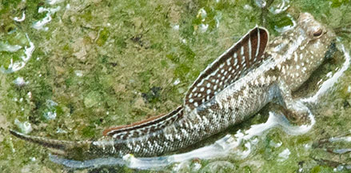
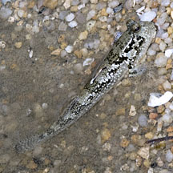
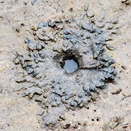
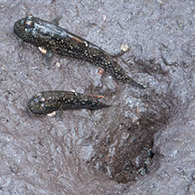
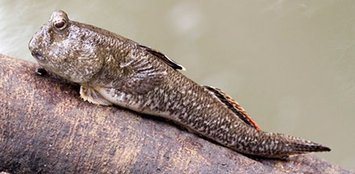
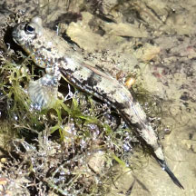

|
|
| fishes text index | photo index |
| Phylum Chordata > Subphylum Vertebrate > fishes > Family Gobiidae > mudskippers |
| Yellow-spotted
mudskipper Periophthalmus walailakae* Family Gobiidae updated Sep 2020 Where seen? This large spotted mudskipper is sometimes seen in our mangroves, or on mudflats and sandflats near mangroves. Features: To about 13cm long, those seen about 8-10cm. It has a greyish body with scattered yellowish spots all over the 'cheeks' and body. There are brownish spots on the upper body. No irridescent blue spots. The first dorsal fin has a rounded margin, is brownish red with a broad black band and narrow white margin. The second dorsal fin has a black stripe in the middle. The two dorsal fins are well separated. The pelvic fins form a complete disk. |
 A quarreling pair Chek Jawa, Oct 07 |
 Chek Jawa, Nov 09 |
| Sometimes mistaken for as juveniles of the Giant mudskipper. Unlike the Giant mudskipper, the Yellow-spotted mudskipper does not have a broad black band along the body length and lacks the white-bluish, iridescent speckles often seen on the Giant mudskipper's cheeks. Juvenile Yellow-spotted mudskippers can also be mistaken for other small mudskippers. More about how to tell apart small mudskippers commonly found on our shores. |
 Juveniles often mistaken for other mudskippers. Pasir Ris, Oct 09 |
 Burrow doesn't have a 'swimming pool' like the Giant mudskipper. Chek Jawa, Mar 14 |
 A pair at their burrow. Sungei Buloh Wetland Reserve, Aug 03 |
| Burrow behaviour: Like the Giant mudskipper, this fish is also seen to dig out deep burrows. Unlike the Giant mudskipper, it doesn't seem to create a 'swimming pool' at the mouth of the burrow. The Yellow-spotted mudskipper is said to be nocturnal, leaving its burrow at night to forage and returning to the burrow in the morning. But they are sometimes seen on Chek Jawa, frolicking out in the mid-day sun with the incoming tide, among other kinds of mudskippers. During low tide, even during the day, they can sometimes be seen at the entrance of the burrow. Sometimes, two fishes at one burrow. |
*Species are difficult to positively identify without close examination.
On this website, they are grouped by external features for convenience of display.
| Yellow-spotted mudskippers on Singapore shores |
On wildsingapore
flickr
|
| Other sightings on Singapore shores |
 Clinging on with its pelvic fins, its pectoral fins on the side. Sungei Buloh Wetland Reserves, Aug 13 Photo by Marcus Ng on flickr. |
 St John's Island, Apr 25 Photo shared by Mathias Luk on facebook. |
|
a mudskipper's short story from SgBeachBum on Vimeo. |
Links
|